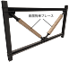

2021年
問題96 建築物とその構造に関する次の記述のうち，最も不適当なものはどれか．
（1）免震構造では，アイソレータを用いて振動エネルギーを吸収し，振動を小さくする．
（2）耐震補強には，強度や変形能力を高める方法がある．
（3）制振構造において，建物の揺れを制御・低減するためのダンパに座屈拘束ブレースなどが用いられる．
（4）コンクリートの打設時間の間隔が長くなると，コールドジョイントが生じやすくなる．
（5）構造設計に用いる計算法には，保有水平耐力計算，限界耐力計算，許容応力度等計算がある．
2021年
問題96 正解なし※ 頻出度AAA
（試験実施者から正答一覧公表の際に，正答となる選択肢がない，と付記された．）-(1) 免震構造では，基礎部分にあって建物の荷重を支えながら揺れを遮断する積層ゴムなどの「免震支承（アイソレータ）」と，それでも建物に伝わった揺れのエネルギーを吸収するオイルダンパなどの「減衰装置」で構成されるものが多い（2021-96-1図）．
2021-96-1図 免震構造
-(2) 耐震補強
建築物の耐震改修の促進に関する法律における耐震改修とは，地震に対する安全性の向上を目的として，増築，改築，修繕，模様替若しくは一部の除却又は敷地の整備をすることをいう．
耐震補強の方法として，強度を高める方法と変形能力を高める方法がある．
1．鉄筋コンクリート造の無開口耐震壁の増設
2．筋かい（筋違，筋交い，ブレースともいう．）等の増設
3．柱に鉄板，炭素繊維を巻いて補強
補強にならない ････ 腰壁や垂たれ壁の増設（逆に柱のせん断破壊が生じやすくなる．）※
※ 開口部の下部の壁を腰壁，上部を垂れ壁という．腰壁，垂れ壁つきの柱を短柱という．腰壁，垂れ壁と柱の間にスリットを入れて柱のせん断破壊を防止することを長柱化という．
-(3) ブレース（筋交い）は立構面に入れる補強材で，風や地震の水平荷重に備える．座屈拘束ブレース（2021-96-2図）は芯材となる鋼材を2つの拘束材で挟み込み，一体化し，芯材の座屈（圧縮力に負けて横にはらみ出す現象）を防ぐ．
2021-96-2図 座屈拘束ブレース

出典 熊谷組
https://www.kumagaigumi.co.jp/news/2022/pr_20220322_1.html
-(4) コールドジョイントは，コンクリートの打ち重ね時の不具合により，本来一体化すべきコンクリートに不規則な断面ができ，強度，水密性，耐久性に問題が生じることをいう．コールドジョイントを防ぐためには，打重ね許容時間を，外気温25℃未満の場合には2.5時間以内，外気温25℃以上の場合には2.0時間以内にするなどの規定がある．
-(5) 構造設計では，中小地震に対する許容応力度計算に基づく設計を一次設計といい，大地震に対し重大な損傷がなく，崩壊しないことを目標に行う構造設計を二次設計という（2021-96-1表参照）．
構造設計
| 対象建築物 | 計算法等 | ルート※ | |
| 一次設計 | 構造設計を必要とする全ての建築物 | 許容応力度計算 | ルート1 |
| 二次設計 | |||
| 主に高さ31m以下の鉄骨造（4階建て以上など）、RC造、または一定の規模・構造を持つ建築物 |
許容応力度等計算 層間変形角，偏心率，剛性率等の確認 |
ルート2 | 主に高さ60m以下※の鉄筋コンクリート造（RC造）や鉄骨造（S造） | 保有水平耐力計算 | ルート3 |
| 免震構造の建築物，伝統的構法（伝統構法）の木造建築物等で採用 | 限界耐力計算 | （2次設計の別ルート） |